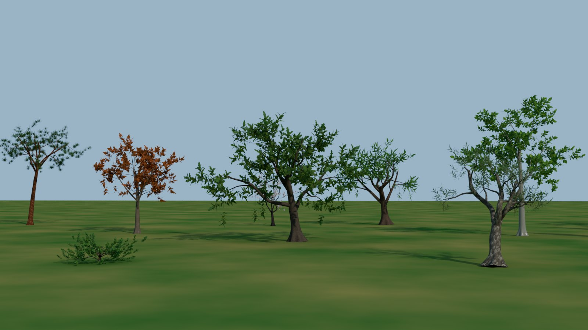
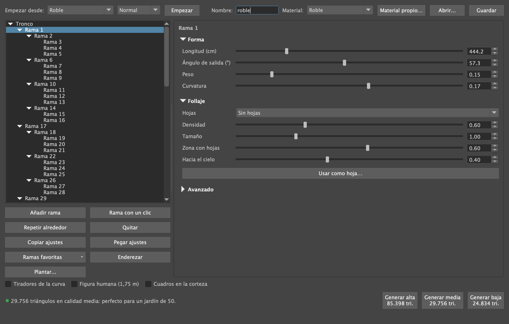
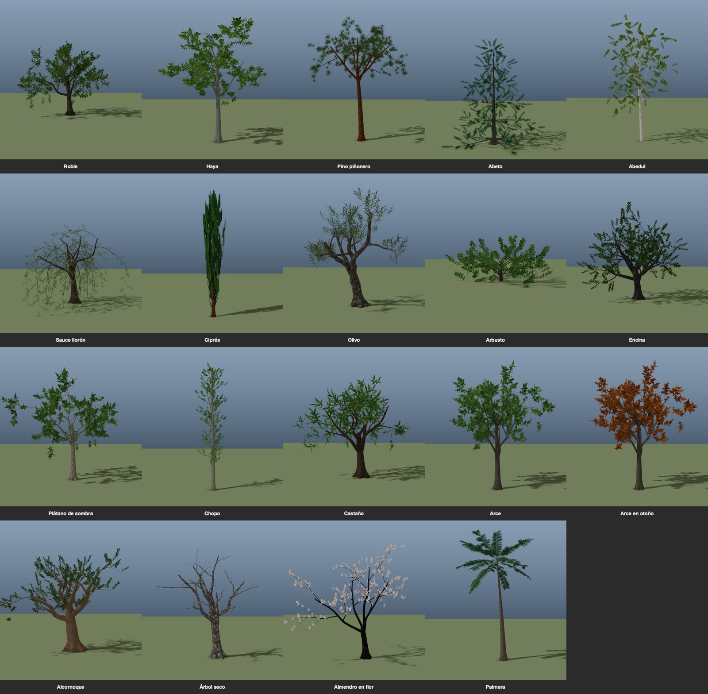
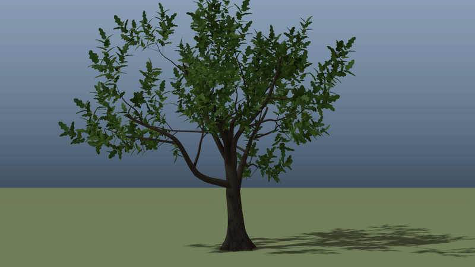
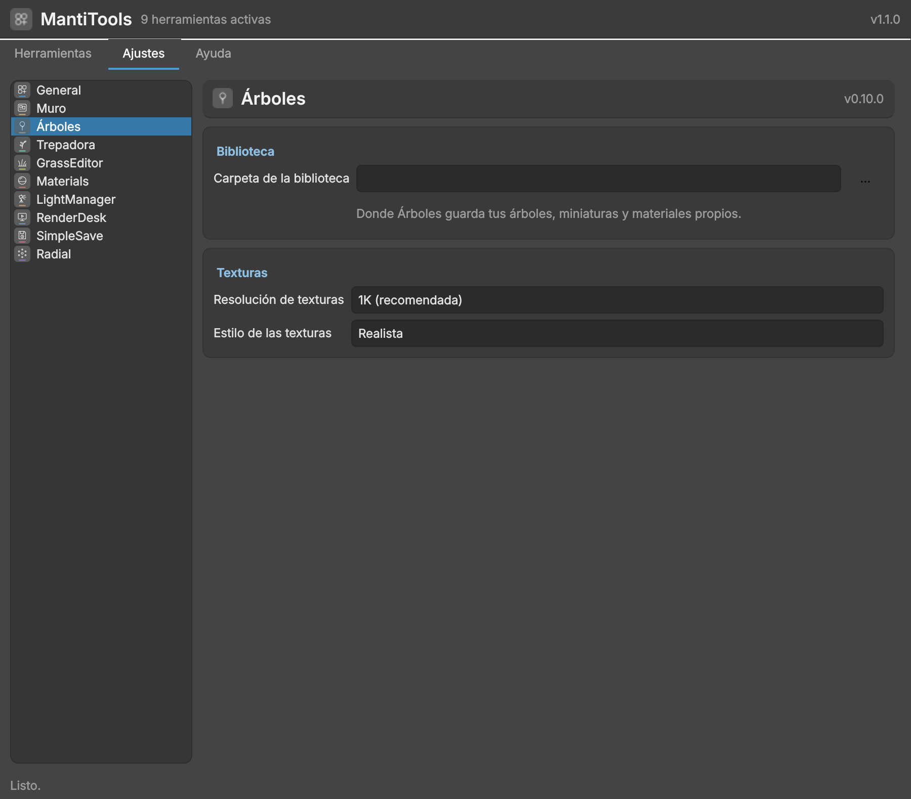

Para qué sirve
Con Árboles montas un árbol a mano, rama a rama y con deslizadores que se entienden, lo guardas en tu biblioteca y lo plantas en la escena tantas veces como quieras. Las copias plantadas siguen ligadas a su original: si cambias el original, cambian todas. Un jardín de 50 árboles cabe sin problema.
Tu primer árbol en cinco minutos
- Clic en el icono Árboles (o MantiTools › Árboles › Editor de árboles…).
- En Empezar desde elige una plantilla y su frondosidad (clara, normal o frondosa), y pulsa Empezar.
- Haz clic en una rama de la lista o en el visor y mueve los deslizadores. Todo cambia al momento.
- Ponle un nombre y pulsa Guardar. Se guarda con una miniatura.

Las 19 especies de serie
Roble, encina, alcornoque, haya, castaño, plátano de sombra, arce, arce en otoño, chopo, abedul, sauce llorón, olivo, almendro en flor, pino piñonero, abeto, ciprés, palmera, árbol seco y arbusto. «Solo tronco» es para empezar de cero.

Editar
| Quiero… | Cómo |
|---|---|
| Añadir una rama donde yo diga | Rama con un clic y clic en el tronco o en una rama. Esc para terminar |
| Cambiar varias ramas a la vez | Selecciónalas y mueve el deslizador: cada una cambia desde su valor |
| Repartir ramas alrededor del tronco | Selecciona una y pulsa Repetir alrededor |
| Doblar una rama a mano | Activa Tiradores de la curva y mueve los puntos amarillos. Enderezar lo deshace |
| Copiar el aspecto de una rama a otras | Copiar ajustes en una, selecciona las otras y Pegar ajustes |
| Reutilizar una rama en otro árbol | Ramas favoritas |
| Partir el tronco en dos o tres (en Y) | Selecciona el tronco y, en Avanzado, sube Horquilla. Brazos y Abertura dan el resto |
| Ver la escala | Figura humana (1,75 m) |
| Deshacer | Ctrl+Z (⌘+Z en Mac), en todo |
Si dejas el ratón quieto sobre un deslizador, sale una frase y un dibujo de qué hace, de menos a más.
Consejo
El deslizador estrella es Peso: dobla la rama hacia abajo por su peso. Con él pasas de un roble a un sauce.

Hojas
En cada rama eliges el tipo de Hojas, su Densidad, su Tamaño, la Zona con hojas (solo la punta o toda la rama) y cuánto miran Hacia el cielo.
| Tipo | Se parece a |
|---|---|
| Hoja ancha | haya |
| Hoja lobulada | roble |
| Hoja pequeña | encina, alcornoque |
| Hoja palmeada | arce, plátano de sombra |
| Hoja larga dentada | castaño |
| Hoja fina | sauce, olivo |
| Hoja redonda | abedul, chopo |
| Plumosa | acacia, fresno, mimosa |
| Foliolos en pluma | palmera |
| Flores | almendro, cerezo |
| Escamas | ciprés, tuya |
| Agujas (largas en borla, cortas en escobilla) | pino, pino piñonero, abeto |
El semáforo
Abajo, en el editor, hay un contador de triángulos con un color. Verde: cabe sin problema en un jardín de 50 árboles. Amarillo: pesado; planta menos o usa calidad baja. Rojo: quita ramas u hojas.
Plantar un jardín
- Clic derecho en el icono › Biblioteca para plantar (o el botón Plantar… del editor).
- ¿Biblioteca vacía? Pulsa Ejemplos y tendrás los árboles de serie.
- Elige un árbol, la calidad (baja, media o alta) y pulsa Plantar con clic.
- Cada clic en el visor planta un árbol sobre el suelo, con un giro al azar. Esc para terminar.

Cambiar todas las copias a la vez
- Selecciona una copia y pulsa Editar maestro.
- Cambia lo que quieras en el editor y pulsa Guardar.
- Acepta actualizar las copias: cambian todas a la vez.
¿Quieres que una copia sea distinta? Selecciónala y pulsa Desligar.
Materiales y render
Cada especie trae sus texturas de corteza y de hoja, con material OpenPBR (ver OpenPBR). En el editor, el desplegable Material elige las de una especie o Clay (gris neutro, cómodo para modelar). En el visor, pulsa 6 para ver las texturas.
- Resolución de texturas: 512 o 1K mientras trabajas, 2K o 4K para el render final. Se cambia en su submenú o en Ajustes, y actualiza los árboles que ya están en la escena.
- Estilo de texturas: Realista, Cartoon (colores planos) o Estilizado (como pintado a mano).

Material propio… en el editor deja usar tus imágenes: una corteza repetible y una hoja de pie (tallo abajo, punta arriba). El plugin repite la hoja en cuatro tonos para que el follaje no sea de un verde uniforme. Se guarda en tu biblioteca, en la carpeta materiales.
Consejos
- Si los árboles se ven grises en el visor, pulsa 6.
- Si las hojas se ven negras, activa Lighting › Two Sided Lighting en el visor. El editor la activa solo.
- Clic derecho en el icono › Comprobar Árboles dice la versión de Maya, si está Arnold y dónde está tu biblioteca.
En el estante
| Cómo | Orden |
|---|---|
| Clic en el icono | Abrir el editor |
| Clic derecho | Biblioteca para plantar |
| Clic derecho | Árbol de ejemplo |
| Clic derecho | Crear materiales |
| Clic derecho | Convertir materiales a OpenPBR |
| Clic derecho | Comprobar Árboles |
Ajustes en MantiTools

Biblioteca
| Ajuste | Valores | Qué hace | Clave |
|---|---|---|---|
| Carpeta de la biblioteca | Una carpeta | Donde Árboles guarda tus árboles, miniaturas y materiales propios. | carpeta_biblioteca |
Texturas
| Ajuste | Valores | Qué hace | Clave |
|---|---|---|---|
| Resolución de texturas | 512 (aula, rápido), 1K (recomendada), 2K, 4K (render final) | resolucion_texturas |
|
| Estilo de las texturas | Realista, Cartoon (colores planos), Estilizado (pintado) | estilo_texturas |